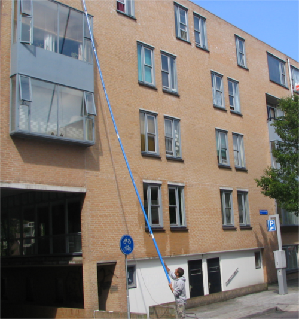

Tucker pole systeem
Telescoop glasbewassing
Bij telescopische glasbewassing maken wij gebruik van osmosewater (gedemineraliseerd water). Dit water wordt omhoog gepompt door een telescoopsteel. Aan het einde van de telescoopsteel zit een borstel. Door deze borstel heen en weer te bewegen over het oppervlak wordt het vuil losgemaakt, en door middel van het osmosewater wordt het losgemaakte vuil weggespoeld.
- Het oppervlak droogt streep- en vlekkeloos op
- Er wordt vanaf de grond gewerkt, dus een stuk veiliger
- Wat vanaf de grond niet te bereiken is, doen wij met de hoogwerker
- Ideaal voor gebouwbeheerders die medeverantwoordelijk zijn voor de veiligheid van de glazenwasser